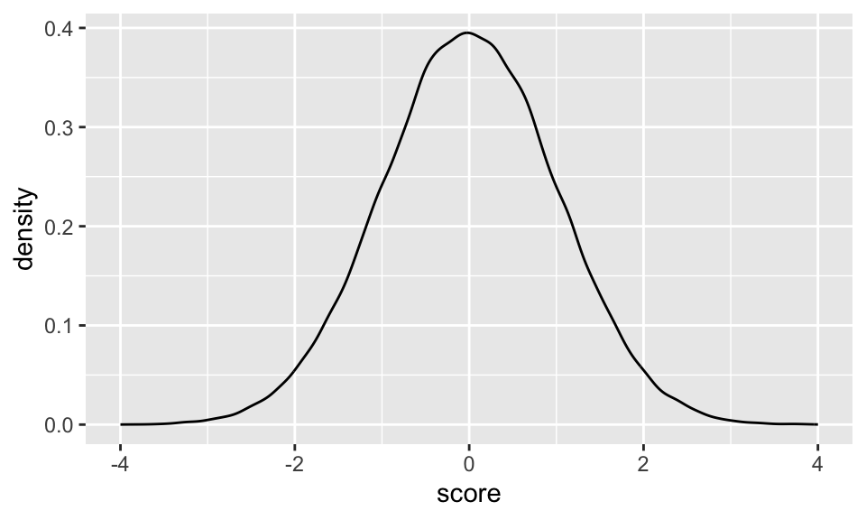
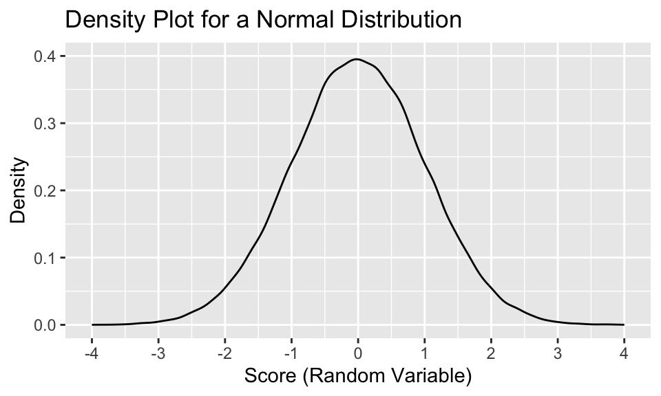
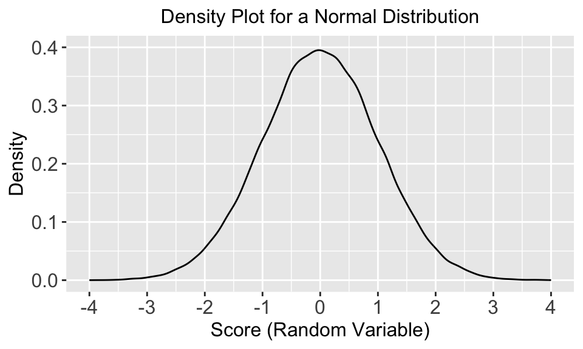
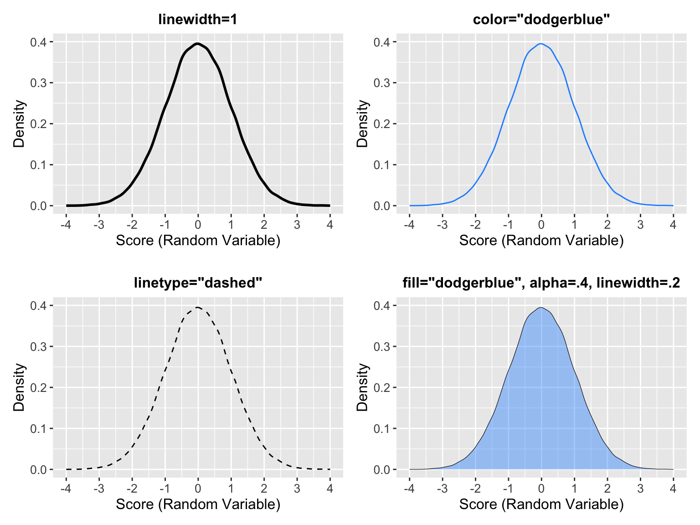
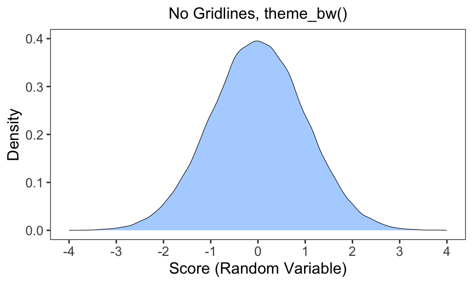

library(tidyverse)
set.seed(123)
mynorm <- data.frame(id=1:100000) |>
mutate(score=rnorm(n = 100000, mean = 0, sd = 1))
4 Data Visualization
The topic of data visualization has become one the more exciting developments in data analysis in the contemporary era. Scholars and analysts have thought systematically about ways to distill complex information (in the form of large amounts of data) into graphical displays that people can readily understand and interpret. How many times have you heard it? “I consider myself a visual learner.” Many people fit this bill, of course. Presenting results visually as maximizes a researcher’s ability to communicate their findings with maximum efficacy.
Data visualization developments have greatly benefited from the R package called ggplot2, which is perhaps the crown jewel of the tidyverse. This chapter will simultaneously introduce readers to the foundations and developments of data visualization and the basic and advanced features of ggplot. The chapter will first cover some basic data visualization principles that apply to all graphical displays. Readers interested in additional information about these principles can consult Wickham, Cetinkaya-Rundel, and Grolemund (2023). Next, the chapter covers the nuts and bolts of univariate graphical displays, i.e., summaries of just one variable where we want to evaluate and communicate the central tendency and dispersion of a variable. The third topic covers the nuts and bolts of bivariate graphical displays, i.e., summaries of the strength of an association or relationship between two variables.
This chapter will also emphasize the importance of a variable’s level of measurement — nominal, ordinal, or interval/continuous from Section 2.2.3 — as the critical driver of what type of graph a user will generate to communicate univariate and bivariate descriptions.
4.1 Data Visualization Principles
When users present a graphical display of some aspect of their data, I recommend that they “sweat the small stuff.” After all, the researcher is distilling sometimes vast amounts of information into a single plot, so one should take great care that the graph is accurately conveys the intended summary information. Let’s begin with a very simple graph of a normal distribution, which is a univariate display that we will cover in the next section in greater detail. Most users are familiar with the well-known normal distribution as a bell-shaped, symmetric distribution that is centered around a single central tendency. The code below simulates a “random variable” for 100,000 observations based on the normal distribution.
Note that I first “set a seed,” which allows me to replicate exactly the data that I have simulated (in this case the “score” variable) in future instances. If I set the same seed in the future, I will get the same underlying data values for score. The command creates a dataset object, “mynorm,” with 100,000 observations. I then create the score variable in this dataset which is a random variable based on a normal distribution via the use of the rnorm command. I next set the values of the mean and standard deviation (which the next section will discuss in greater detail). A distribution with a mean of 0 and a standard deviation of 1 is called a “standard normal distribution.” Each unit of measurement (from 1 to 2 to 3) for the score variable represents one standard deviation. Next, I use ggplot to create a “density plot.”
mynorm |>
ggplot(aes(x=score)) +
geom_density() +
xlim(-4, 4)
Since ggplot is part of the tidyverse, we can use piping, which I use here when I first call up the dataset “mynorm.” Inside the ggplot command is aes(), which stands for “aesthetic.” The aesthetic of a ggplot graph includes anything involving the basic structure of the graph, that is, what is included within the actual plot itself. Within the aesthetic is where I declare what variable will go on the x-axis. In this case, that is the “score” variable, which means I enter “x=score.” The following line declares what “geometry” I will use. Since I want a density plot, I use geom_density. I will give a full listing of univariate geometries below. Finally, in the third line, I tell ggplot what the range of the x-axis should be, ranging from -4 to 4. If I do not issue this command, ggplot will use defaults, which are often sensible and are good to use at the start. Importantly, note that each specification is separated by a + sign. My own practice is hit “enter” after each plus and make each specification a separate line. Note that even though this ggplot command has four lines, it is one command.
I will now use this basic plot to walk through some basic principles of data visualization. When generating a graphical display, a researcher should make it a “stand-alone” plot to the greatest extent possible. Though a graph is always accompanied by textual interpretation, a researcher should strive to generate a graph that someone could observe and immediately glean a sufficient amount of information in that graph to make a basic interpretation of what it communicates.
4.1.1 Titles and Axis Labels
The first step in achieving this “stand-alone” goal requires giving the graph: (1) a descriptive graph title, (2) clear titles for the x-axis and y-axis, and (3) sensible numeric labels and increments for the x-axis and y-axis. The command below attempts to achieve all three goals using the labs, scale_x_continuous, and scale_y_continuous specifications added on to the ggplot command.
mynorm |>
ggplot(aes(x=score)) +
geom_density() +
labs(title="Density Plot for a Normal Distribution",
x="Score (Random Variable)", y="Density") +
scale_x_continuous(limits = c(-4, 4), breaks = seq(-4, 4, 1)) +
scale_y_continuous(limits = c(0, .4), breaks = seq(0, .4, .1))
To include a graph title and titles for the x-axis and y-axis, I can use labs. The syntax is very self-explanatory. Simply separate each title by a comma. Because the score variable is continuous, or an interval variable, I use scale_x_continuous to specify values of the x-axis. In this case, I actually prefer to include x-axis numeric labels in increments of 1. The limits specification defines the minimum and maximum limits of the x-axis (like xlim did in the prior graph). breaks specifies which numeric labels I want to include. This syntax, seq(-4, 4, 1), means make numeric labels go from -4 to 4 in increments of 1.1 If I were to put a “2” at the end instead of a “1” (i.e., seq(-4, 4, 2)), the x-axis would include numeric labels -4, -2, 0, 2, 4. For the y-axis, I like the default provided by ggplot, but I formalize it in the scale_y_continuous command.
So far so good with our objectives for titles and axis labels. One final consideration concerns font sizes for all the facets we have worked with. By default, the title has the largest font, the axis titles have the second-largest font, and the axis numeric labels have the smallest font. Also, some researchers will want to center the graph title. We can change these features in the theme() command in ggplot. Let’s center the graph title and set the font size to be the same (12pt) for all features to see what it looks like.
mynorm |>
ggplot(aes(x=score)) +
geom_density() +
labs(title="Density Plot for a Normal Distribution",
x="Score (Random Variable)", y="Density") +
scale_x_continuous(limits = c(-4, 4), breaks = seq(-4, 4, 1)) +
scale_y_continuous(limits = c(0, .4), breaks = seq(0, .4, .1)) +
theme(plot.title = element_text(hjust = 0.5, size=12), # Graph title
axis.title = element_text(size = 12), # Axis titles
axis.text = element_text(size = 12)) # Axis tick labels
Within the theme command, I have included options for plot.title (for the overall graph title), axis.title (for the x-axis and y-axis titles), and axis.text (for x-axis and y-axis numeric labels). Typically, we want the elements of the x-axis and y-axis to match. However, options exist for making disctinctions between the axes. For each of these three specifications within theme, we specify settings for the element_text. For plot title, I use hjust=0.5 to center the graph title. I use size=12 for all three features to make the font size 12pt for all text in the graph. Some researchers might actually prefer a hierarchy of font sizes, as the default graph above did. Let’s use a 10pt font the axis numeric labels and 12pt font for the titles:
mynorm |>
ggplot(aes(x=score)) +
geom_density() +
labs(title="Density Plot for a Normal Distribution",
x="Score (Random Variable)", y="Density") +
scale_x_continuous(limits = c(-4, 4), breaks = seq(-4, 4, 1)) +
scale_y_continuous(limits = c(0, .4), breaks = seq(0, .4, .1)) +
theme(plot.title = element_text(hjust = 0.5, size=12), # Graph title
axis.title = element_text(size = 12), # Axis titles
axis.text = element_text(size = 10)) # Axis tick labels
Users will naturally experiment with different font sizes. One wants make sure to accommodate accessibility concerns by making the font big enough and readable enough. Font sizes smaller than 10pt can get hard to read.
4.1.2 Color, Thickness, and Line Style
One can also change the thickness, color, or style of the plot line by specifying options within the geom_density parentheses.
library(patchwork)
a <- mynorm |>
ggplot(aes(x=score)) +
geom_density(linewidth=1) +
labs(title="linewidth=1",
x="Score (Random Variable)\n ", y="Density") +
scale_x_continuous(limits = c(-4, 4), breaks = seq(-4, 4, 1)) +
scale_y_continuous(limits = c(0, .4), breaks = seq(0, .4, .1)) +
theme(plot.title = element_text(hjust = 0.5, size=12, face = "bold"),
axis.title = element_text(size = 12),
axis.text = element_text(size = 10))
b <- mynorm |>
ggplot(aes(x=score)) +
geom_density(color="dodgerblue") +
labs(title='color="dodgerblue"',
x="Score (Random Variable)", y="Density") +
scale_x_continuous(limits = c(-4, 4), breaks = seq(-4, 4, 1)) +
scale_y_continuous(limits = c(0, .4), breaks = seq(0, .4, .1)) +
theme(plot.title = element_text(hjust = 0.5, size=12, face = "bold"),
axis.title = element_text(size = 12),
axis.text = element_text(size = 10))
c <- mynorm |>
ggplot(aes(x=score)) +
geom_density(linetype="dashed") +
labs(title='linetype="dashed"',
x="Score (Random Variable)", y="Density") +
scale_x_continuous(limits = c(-4, 4), breaks = seq(-4, 4, 1)) +
scale_y_continuous(limits = c(0, .4), breaks = seq(0, .4, .1)) +
theme(plot.title = element_text(hjust = 0.5, size=12, face = "bold"),
axis.title = element_text(size = 12),
axis.text = element_text(size = 10))
d <- mynorm |>
ggplot(aes(x=score)) +
geom_density(fill="dodgerblue", alpha=.4, linewidth=.2) +
labs(title='fill="dodgerblue", alpha=.4, linewidth=.2',
x="Score (Random Variable)", y="Density") +
scale_x_continuous(limits = c(-4, 4), breaks = seq(-4, 4, 1)) +
scale_y_continuous(limits = c(0, .4), breaks = seq(0, .4, .1)) +
theme(plot.title = element_text(hjust = 0.5, size=12, face = "bold"),
axis.title = element_text(size = 12),
axis.text = element_text(size = 10))
a + b + c + d + plot_layout(ncol = 2)
The first plot uses a thicker line width (of 1). The default line width is .5. Users can experiment with different gradations to find the right width for their purposes. Putting color in a graph is always more visually pleasing, especially in graphs where want to distinguish groups. I have used “dodgerblue” here. RStudio has 657 different colors, and users can see all color options via a command like this, which uses the colors() command.
colors <- data.frame(colors())
head(colors, n=15) colors..
1 white
2 aliceblue
3 antiquewhite
4 antiquewhite1
5 antiquewhite2
6 antiquewhite3
7 antiquewhite4
8 aquamarine
9 aquamarine1
10 aquamarine2
11 aquamarine3
12 aquamarine4
13 azure
14 azure1
15 azure2Like other options, researchers will often experiment with different colors to find the best for their purposes. Researchers should be attuned to accessibility issues surrounding the use of colors for those who are color blind.
Finally, the second row of the figure above changes the line style to “dashed”. Other options for line style (which can be used in other graphs with a line in them) include: “dotted”, “dotdash”, “longdash”, and “twodash.” The last graph uses the fill option with “dodgerblue”, which is often appealing for a graph like this because it clearly delineates the area under the curve relative to the other space. I also made the linewidth thinner (.2). To remove the black line altogether, one could simply enter linewidth=0 or linesteyle="blank". One key feature that many users specify when using the fill option is alpha, which regulates the transparency of the fill. Notice that you can see the grid lines in the background. Alpha ranges from 0 to 1, where 0 is complete transparency (the fill color disappears) and 1 is no transparency. Researchers will often experiment with different gradations of alpha.
4.1.3 General Look and Themes
So far, all graphs have included a gray background with gridlines (for both axes) included by default. We can change the general “look” of a graph adding theme_[type]() as a separate line in the graph. ggplot has several themes. If you are using ggplot, once you begin typing “theme_…”, RStudio will give you a pulldown menu of all the options. Later, I compare four commone themes. First, to show the general syntax, I change the theme below to theme_minimal().
mynorm |>
ggplot(aes(x=score)) +
geom_density(fill="dodgerblue", alpha=.4, linewidth=.2) +
labs(title="theme_minimal()",
x="Score (Random Variable)", y="Density") +
scale_x_continuous(limits = c(-4, 4), breaks = seq(-4, 4, 1)) +
scale_y_continuous(limits = c(0, .4), breaks = seq(0, .4, .1)) +
theme_minimal() +
theme(plot.title = element_text(hjust = 0.5, size=12),
axis.title = element_text(size = 12),
axis.text = element_text(size = 10)) 
Always make sure to put theme_minimal() (or whatever theme you specify) before theme() since the latter tweaks aspects of the former. This theme is quite bare bones but it does include core elements, like gridlines in the background. Below, I compare the default and minimal to two other general themes, theme_bw() and theme_classic().

In political science research, I have found that the default, minimal, and bw tend to be the most popular. I have also included classic, with its x-axis and y-axis only and also no gridlines. With the specific use of the x-axis and y-axis, a literal data visualization principle would suggest that classic should only be used if the intersection of the x and y-axes is truly the origin (i.e., 0 for both x and y). That fits the bill for the y-axis in this case but not for the x-axis.
Another data visualization consideration is the “padding” that ggplot adds by default on both ends of each axis. The horizontal padding at the bottom of the graphs is most glaring in this graph because the “floor” is supposed to be zero (which is the minimum possible value of y in this case). Note however the visible gap before this floor in the default, bw, and classic graphs. Because of the look of the minimal theme,
Take out gridlines:
mynorm |>
ggplot(aes(x=score)) +
geom_density(fill="dodgerblue", alpha=.4, linewidth=.2) +
labs(title="No Gridlines, theme_bw()",
x="Score (Random Variable)", y="Density") +
scale_x_continuous(limits = c(-4, 4), breaks = seq(-4, 4, 1)) +
scale_y_continuous(limits = c(0, .4), breaks = seq(0, .4, .1)) +
theme_bw() +
theme(plot.title = element_text(hjust = 0.5, size=12),
axis.title = element_text(size = 12),
axis.text = element_text(size = 10),
panel.grid = element_blank()) 
4.2 Univariate Graphical Displays
set.seed(123)
mynorm2 <- data.frame(id=1:100000) |>
mutate(score=rnorm(n = 100000, mean = 0, sd = 2))
a <- mynorm |>
ggplot(aes(x=score)) +
geom_density() +
xlim(-8, 8) +
ylim(0, .4)
b<- mynorm2 |>
ggplot(aes(x=score)) +
geom_density() +
xlim(-8, 8) +
ylim(0, .4)
a + b + plot_layout(ncol = 2)
4.3 Bivariate Graphical Displays
Note that equivalent syntax is
seq(-4, 4, by = 1).↩︎